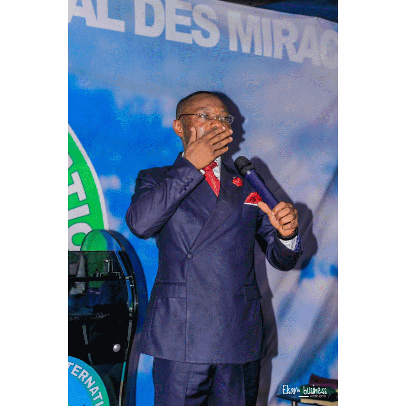

PROGRAMMA DES CULTES
De 9h00 à 12h30 Consultation apôstolique
De 12h00 à 13h00 Priere d'intercession dénomée une heure avec jésus
De 9h00 à 12h30 Culte de célébration de louange et adoration
CATEGORIE DES MEMBRES DE CETTE EGLISE
Pour être un membre adhérant il faut: Etre un fidel d’une assemblée locale de l’église Centre International
des Miracles
partout dans le monde peut importe la nationalité
Est membre effectif :
Tout ministre ordonné au sein de l’église qui marche dans la parole selon sa vocation ;
Tout membre désigné par le comité directeur sur proposition du directeur de district de sa provenance,
ce membre doit répondre aux critères ci-après :
Etre né de nouveau
Avoir un bon témoignage
Etre attaché à la saine doctrine
Avoir une expérience dans la gestion dans l’une des entités de l’église (1timothée3 : 9, Tite 1 :5-9)
DES CONDITION D’ADHESION, DE SORTIE, DROIT ET OBLIGATIONS
Est membre adhérent :
Toute personne ayant acceptée Jésus-Christ comme seigneur et sauveur personnel ;
Etre né de nouveau ;
Etre attaché à la saine doctrine de Jésus-Christ ;
Reconnaitre et accepter l’autorité hiérarchique de la communauté Centre international des miracles et de l’assemblée locale.
Tout membre adhérent peut quitter librement l’association ;
Il peut écrire une lettre ou faire une déclaration verbale actée dans un procès-verbal au comite de l’assemblée locale.
S’il assume la charge de conducteur ou de pasteur il doit :
Ecrire une lettre à la hiérarchie
Attendre la réponse
Procéder à la remise et reprise avec le remplaçant
Il ne peut pas lui-même communiquer sa décision de retrait à l’assemblée qu’il dirige.
Tout membre effectif qui veut démissionner doit écrire au secrétaire général et réserver une copie à sa hiérarchie ;
Le secrétaire général doit accuser réception de cette lettre à l’expéditeur ;
Il doit communiquer la décision du comité directeur à l’intéresser
Tout membre auteur d’un scandale. Il sera notifier de son exclusion par sa hiérarchie ;
Tout membre qui viole les statuts et règlement intérieurs. Toutefois, si ce dernier se repent sincèrement, il peut réintégrer l’association.
Tout membre démissionnaire ou exclu de l’association n’a aucun droit de revendiquer le remboursement des cotisations,
dons et legs ni tout autre bien faisant parti du patrimoine de l’association.
DROITS
Tout membre adhérent a droit à :
L’édification, l’encadrement, la protection, l’assistance ainsi qu’à tous les privilèges que peut lui procurer l’association par le truchement de son église locale. Il a droit au vote dans l’assemblée locale où il siège Tout membre effectif a droit à :
La protection et à tous les avantages que l’association peut procurer le cas échéant à ses membres ;
Au vote dans l’assemblée générale ;
L’éligibilité aux fonctions de direction de l’association.
OBLIGATIONS
Tout membre adhérent doit :
Participer et conformer aux différents programmes de la communauté
Contribuer à l’avancement de son église locale et de l’association en mettant ses différents dons au service de la communauté
en versant ses dîmes, offrandes, dons et legs.
Tout membre effectif a l’obligation de :
Verser sa contribution mensuelle payable anticipativement en monnaie ayant cour légal en RDC et ses frais de participation seront déterminés dans la lettre de convocation par l’organisation
Veiller au paiement des contributions de son église locale (voir pasteur)
ADRESSE DU SIEGE GENERAL
NOTES
il a été créé à goma, chef-lieu de la province du Nord-Kivu, en république démocratique du Congo, dans le cadre de la législation congolaise en vigueur, une association confessionnelle dénommée église Centre International des Miracles en sigle (CIM).
OBJECTIFS
a) Perpétuer la mission de JESUS-CHRIST selon Matthieu 28 :18-20 ;
b) Accomplir l’ordre suprême de JESUS-CHRIST paf l’évangélisation, l’implantation des églises locales et l’édification du corps du christ conformément à la saine doctrine publique ;
c) La création et la gestion sur le point social des diverses actualités, notamment des écoles, des foyers sociaux, des centres hospitaliers, des cliniques, des fermes, des orphelinats et des centres des formations professionnelles ;
d) Le développement intégral de l’homme en s’employant à rechercher des solutions aux problèmes de l’homme par l’amélioration du niveau de vie de ses membres en particulier ;
e) L’amélioration des infrastructures sociaux économiques et mécaniques d’encadrement et d’appuis logistique qui se traduise notamment par la création des coopératives d’épargne et de crédit et bien d’autres secteurs.
CENTRE INTERNATIONAL DES MIRACLES
Le logo de l'église Centre International des Miracles
FONDATION
Fondée : En 2018
Dévise:
Parole,
Foi,
Miracles
Parole,
Foi,
Miracles


